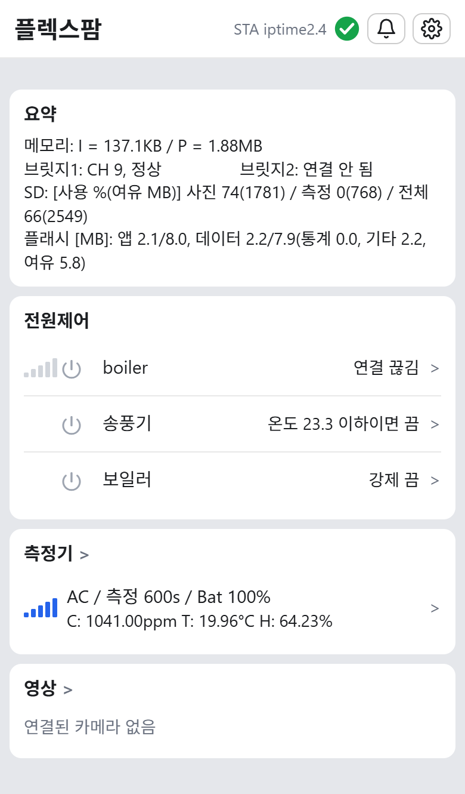
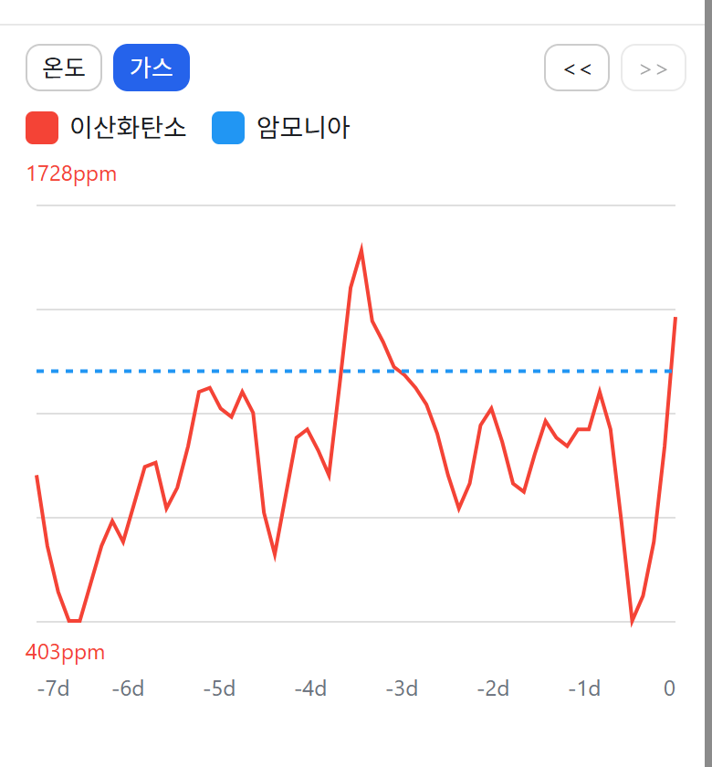

| 회사명 | FlexFarm |
|---|---|
| 주요 제품 | SenseThru, 차폐 환경을 위한 무선 센서 플랫폼 |
| 대표자 | 추후 기재 |
| 연혁 | 추후 기재 |
| 팀 | 추후 기재 |
| 연락처 | 추후 기재 |
금속 구조물로 둘러싸인 공간에서는 일반 무선 신호가 크게 약해집니다.
값이 이상해도 무슨 일이 생겼는지 알려면 현장을 찾아가야 합니다.
원인을 알아도 설비를 조작하려면 다시 현장으로 가야 합니다.
고온 고습한 곳에서는 장치를 수시로 꽂았다 뽑게 됩니다.
비좁은 공간에 전선과 배관이 얽혀 작업과 관리가 어려워집니다.
전용 장비와 배선에 묶이면 측정 지점을 쉽게 늘리거나 옮길 수 없습니다.
센서와 카메라를 무선으로 연결해 옮기기 쉽습니다.
전파가 막힌 공간에서도 안정적으로 연결합니다.
전용 장비 없이 현장에 맞춰 유연하게 구성합니다.
필요할 때만 깨어나 결과만 보냅니다.
일시적인 문제는 스스로 복구합니다.
복구하지 못한 문제는 코드와 알림으로 알립니다.
필요할 때 붙이고 떼며, 기록을 이어 갑니다.
강제, 타이머, 센서 AI, 센서 수동으로 설비를 제어합니다.
꼭 필요한 장치만 넣고 나머지는 밖에 둡니다.
끊겨도 현장 제어를 잇고, 원격 설비는 끕니다.
전원: 충전 배터리와 AC/USB 전원으로 동작합니다. 고온용 장치는 충전이 필요 없는 교체형 전지를 씁니다. 장치와 설정에 따라 충전이나 교체 없이 최대 3개월 이상 사용할 수 있습니다(계산값, 실측 전).


iOS, Android 모두 앱 설치 없이 홈 화면에서 바로 씁니다.
측정값, 그래프, 현장 사진, 연결 상태를 확인합니다.
설비를 켜고 끄거나, 제어 조건을 바꿉니다.
문제가 생기면 휴대폰으로 알려 줍니다.
뜨겁고 습한 재배사 안에 들어가는 배지 센서와 대기 온습도 센서는 고온용으로 설계하여 공급합니다.
온도, 습도, CO2, 암모니아, 접촉 온도, 분진, 누수
현장 사진, 모션 감지, 출입 감지
라이다를 이용한 잔량 측정, 물체 감지
배전반 온도, 모터와 펌프의 진동
쓰러진 작업자의 위치를 차폐 구역 밖으로 전달
현장에 필요한 센서를 요구에 맞춰 더합니다.
양송이의 생육 사진으로 수확 시기를 예측합니다.
사진에서 병해 징후를 찾아 미리 경고합니다.
노출과 색을 고정해 AI 학습에 맞는 사진을 찍는 기능을 갖추었습니다.
이 쪽은 개발 계획이며, 현재 제공되는 기능이 아닙니다.
온습도, CO2, 배지 온도, 생육 사진, 환기 제어
발효실 온습도와 CO2 추이
작물과 가축에 맞는 환경 모니터링과 제어
곡물 저장고, 저온 창고, 금속 패널 창고의 환경 기록
강철 격벽으로 나뉜 구획의 상태 감시
온습도, 가스, 침수 감시
배전반 온도, 모터와 펌프 진동, 무인 설비실 출입
사람이 자주 들어가기 어려운 곳의 감시(인증 절차 필요)
필요한 측정과 제어를 함께 정합니다.
공간, 환경, 측정과 제어 대상을 확인합니다.
필요한 장치와 설치 위치를 정합니다.
설치한 뒤 멀리서 보고 조치합니다.
연락처 추후 기재
SenseThru는 환경 모니터링과 설비 제어 제품으로, 인증된 안전 경보 장비를 대체하지 않습니다. 차폐벽을 지나는 일부 배선과 인터넷 연결이 필요할 수 있으며, 방폭 구역이나 원자력 시설에는 별도 인증이 필요합니다.